Existem muitos gráficos diferentes e outros tipos de exibições de informação visuais, mas alguns poucos funcionarão para a maioria das suas necessidades.
Ao rever as mais de 150 apresentações que criei para workshops e projetos de consultoria no ano passado, notei que utilizei apenas uma dúzia de modelos visuais diferentes (Figura 2.1). Focaremos neles neste capítulo.
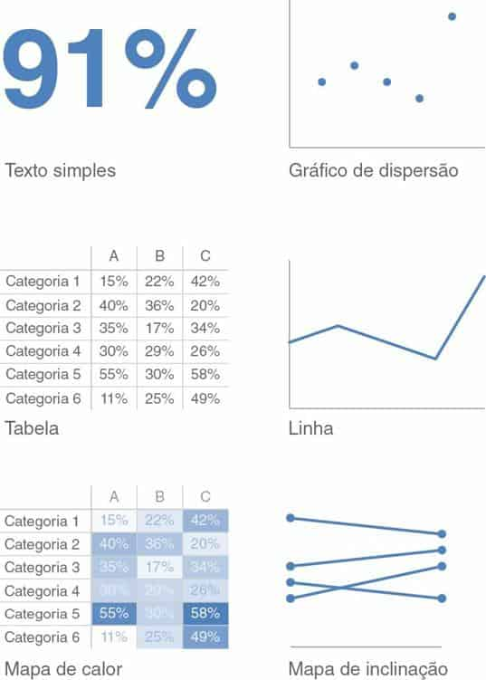
FIGURA 2.1 OS VISUAIS QUE MAIS USO
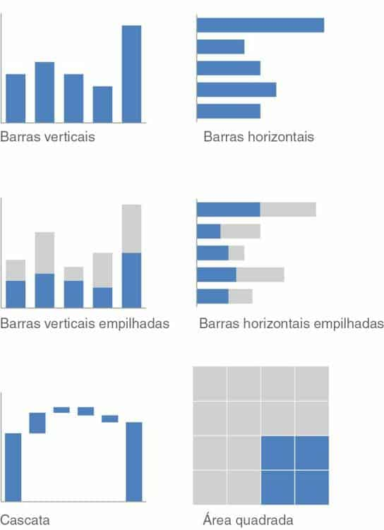
Quando você tem apenas um número ou dois para compartilhar, um simples texto pode ser uma ótima maneira de comunicar. Pense na possibilidade de usar somente o número — destacando-o o máximo possível — e algumas palavras de apoio para esclarecer seu ponto. Além de ser potencialmente enganador, colocar um ou dois números em uma tabela ou gráfico simplesmente faz com que eles percam parte de sua força. Quando você tiver um ou dois números que deseja comunicar, pense na possibilidade de usá-los sozinhos.
Para ilustrar esse conceito, vamos considerar o exemplo a seguir. Um gráfico semelhante à Figura 2.2 acompanhou um relatório do Pew Research Center em abril de 2014 sobre mães que ficam em casa.
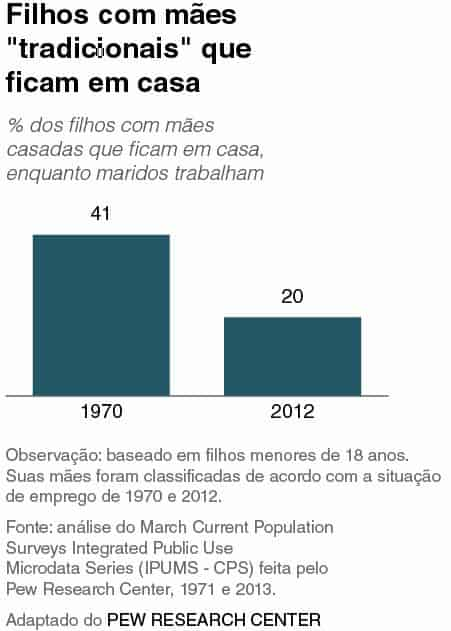
FIGURA 2.2 GRÁFICO ORIGINAL DAS MÃES QUE FICAM EM CASA
O fato de você ter alguns números não significa que precisa de um gráfico!
Na Figura 2.2, muito texto e espaço são usados para um total de dois números. O gráfico não ajuda muito na interpretação deles (e o posicionamento de legendas de dados fora das barras pode até deformar sua percepção de altura relativa, como o fato de 20 ser menos da metade de 41 não ser percebido visualmente).
Nesse caso, bastaria uma simples frase: 20% dos filhos tinham mães tradicionais que ficavam em casa em 2012, comparados com 41% em 1970.
Como alternativa, em uma apresentação ou relatório, você poderia fazer como na Figura 2.3.
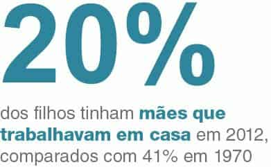
FIGURA 2.3 REMODELAÇÃO DO TEXTO SOBRE MÃES QUE FICAM EM CASA
Como uma observação secundária, uma consideração nesse exemplo específico poderia ser feita se você quisesse mostrar uma métrica totalmente diferente. Por exemplo, você poderia recompor o texto em termos da mudança percentual: “O número de filhos com mães tradicionais que ficam em casa diminuiu mais de 50% entre 1970 e 2012”. Contudo, aconselho ter cautela sempre que reduzir vários números a apenas um — pense no contexto que pode ser perdido ao se fazer isso. Nesse caso, acho que a magnitude dos números (20% e 41%) é útil para interpretar e entender a mudança.
Quando você tem apenas um ou dois números que deseja comunicar: use os números diretamente.
Quando você tem mais dados a mostrar, geralmente, uma tabela ou um gráfico é o caminho. Um detalhe a entender é que as pessoas interagem diferentemente com esses dois tipos de visuais. Vamos discutir cada um em detalhes e ver algumas variedades e casos de uso específicos.
As tabelas interagem com nosso sistema verbal, o que significa que nós as lemos. Quando vejo uma tabela, normalmente aponto com meu dedo indicador: leio as linhas e colunas ou comparo valores. As tabelas são ótimas justamente para isso — comunicar para um público misto, cujos membros procurarão, cada um, sua linha de interesse particular. Se você precisa comunicar várias unidades de medida diferentes, normalmente isso também é mais fácil com uma tabela do que com um gráfico.
Raramente é uma boa ideia usar uma tabela em uma apresentação ao vivo. Enquanto seu público a lê, você não consegue que ele o ouça e perde sua atenção ao realçar um fato verbalmente. Ao usar uma tabela em uma apresentação ou relatório, pergunte-se: o que estou tentando dizer? Provavelmente haverá um modo melhor de selecionar e visualizar a parte (ou partes) de interesse. Caso ache que está perdendo muito com isso, talvez incluir a tabela inteira no apêndice e um link ou referência a ela satisfaça as necessidades de seu público.
Algo a se ter em mente em relação às tabelas é que o design deve assumir um papel secundário, permitindo que os dados fiquem em primeiro plano. Não deixe que bordas grossas ou sombreado chamem a atenção. Em vez disso, pense em usar bordas claras ou simplesmente espaço em branco para separar os elementos da tabela.
Dê uma olhada nos exemplos de tabela da Figura 2.4. Ao fazer isso, note como os dados se sobressaem mais que os componentes estruturais da tabela na segunda e terceira iterações (bordas claras, bordas mínimas).
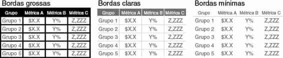
FIGURA 2.4 BORDAS DE TABELA
As bordas devem ser usadas para melhorar a legibilidade da tabela. Pense na possibilidade de empurrá-las para o fundo, tornando-as cinza, ou de desfazer-se delas totalmente. São os dados que devem ser salientados, não as bordas.
Leitura recomendada
Para mais informações sobre design de tabelas, consulte o livro Show Me the Numbers (em inglês), de Stephen Few. Há um capítulo inteiro dedicado ao design de tabelas, com discussão sobre os componentes estruturais e as melhores práticas no design de tabelas.
A seguir, vamos mudar nosso foco para um caso especial de tabelas: o mapa de calor.
Usar mapas de calor é um jeito de misturar detalhes em uma tabela usando pistas visuais. O mapa de calor é um modo de visualizar dados em formato tabular, no qual, em vez dos números (ou além deles), você utiliza células coloridas que transmitem a magnitude relativa dos números.
Considere a Figura 2.5, que mostra alguns dados genéricos em uma tabela e também um mapa de calor.
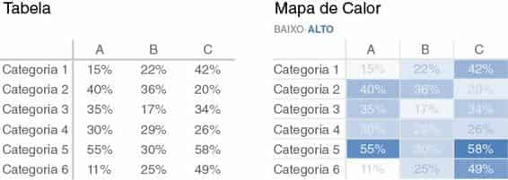
FIGURA 2.5 DUAS VISUALIZAÇÕES DOS MESMOS DADOS
Leia os dados da tabela da Figura 2.5. Surpreendi a mim mesma percorrendo as linhas e colunas para entender o que estava olhando, onde os números estavam mais altos ou baixos e classificando mentalmente as categorias apresentadas.
Para reduzir esse processo mental, podemos usar saturação de cor a fim de fornecer pistas visuais, ajudando nossos olhos e cérebro a atingir mais rapidamente os possíveis pontos de interesse. Na segunda iteração da tabela, à direita, intitulada “Mapa de calor”, quanto mais alta a saturação de azul, maior o número. Isso facilita e agiliza o processo de distinguir as extremidades do espectro — o número mais baixo (11%) e o mais alto (58%) — do que na tabela original, onde não tínhamos nenhum indício visual para ajudar a direcionar nossa atenção.
Os aplicativos de geração de gráficos (como o Excel) normalmente têm funcionalidade de formatação condicional incorporada que permite aplicar com facilidade uma formatação como a que aparece na Figura 2.5. Ao utilizá-la, certifique-se de sempre incluir uma legenda para ajudar o leitor a interpretar os dados (neste caso, o subtítulo BAIXO‐ALTO no mapa de calor, com cores correspondentes à formatação condicional tem esse objetivo).
A seguir, vamos discutir os visuais em que tendemos a pensar quando se trata de comunicação com dados: gráficos.
Enquanto as tabelas interagem com nosso sistema verbal, os gráficos interagem com nosso sistema visual, que é mais rápido no processamento de informações. Isso significa que um gráfico bem projetado normalmente comunicará a informação mais rápido que uma tabela bem projetada.
Conforme mencionei no início deste capítulo, existem muitos tipos de gráfico. A boa notícia é que basta alguns deles para satisfazer a maioria de suas necessidades diárias.
Os tipos de gráficos que uso frequentemente caem em quatro categorias: pontos, linhas, barras e área. Vamos examiná-los com mais atenção e discutir os subtipos que uso regularmente, com casos de uso e exemplos de cada um.
Alguns fazem distinção entre gráficos e grafos. Normalmente, “gráfico” é a categoria mais ampla, sendo os “grafos” um dos subtipos (outros tipos de gráfico incluem os mapas e os diagramas). Não tendo a fazer essa distinção, pois quase todos os gráficos com que lido regularmente são grafos. Neste livro, uso as palavras gráfico e grafo indistintamente.
Gráfico de dispersão
Os gráficos de dispersão podem ser úteis para mostrar a relação entre duas coisas, pois eles permitem codificar dados simultaneamente em um eixo x horizontal e um eixo y vertical para ver se e qual relação existe. Eles tendem a ser mais usados nos campos científicos (e, talvez por isso, às vezes são considerados complicados de entender para quem está menos familiarizado com eles). Embora seja raro, também existem casos de uso de gráficos de dispersão no mundo dos negócios.
Por exemplo, digamos que gerenciamos uma frota de ônibus e queremos entender a relação entre as milhas dirigidas e o custo por milha. O gráfico de dispersão pode ser como o da Figura 2.6.
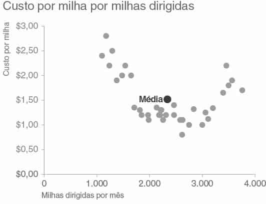
FIGURA 2.6 GRÁFICO DE DISPERSÃO
Se quisermos focar nos casos nos quais o custo por milha está acima da média, um gráfico de dispersão ligeiramente modificado, projetado para levar nossos olhos para lá mais rapidamente, poderia ser como o da Figura 2.7.
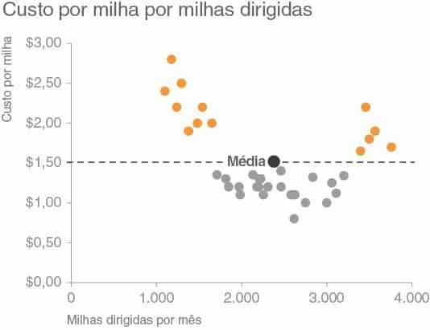
FIGURA 2.7 GRÁFICO DE DISPERSÃO MODIFICADO
Podemos usar a Figura 2.7 para observar que o custo por milha é mais alto que a média quando abaixo de cerca de 1.700 milhas ou acima de 3.300 milhas, para a amostra observada. Nos próximos capítulos, vamos falar mais sobre as escolhas de design feitas aqui e os motivos para elas.
Os gráficos de linhas são mais usados para registrar dados contínuos. Como os pontos são fisicamente conectados por meio da linha, isso indica uma conexão entre eles que pode não fazer sentido para dados categóricos (um conjunto de dados classificados ou divididos em diferentes categorias).
Frequentemente, nossos dados contínuos estão em alguma unidade de tempo: dias, meses, trimestres ou anos.
Dentro da categoria gráfico de linha, existem dois tipos que uso frequentemente: o gráfico de linhas padrão e o gráfico de inclinação.
Gráfico de linhas
O gráfico de linhas pode mostrar apenas uma, duas ou várias séries de dados, como ilustrado na Figura 2.8.
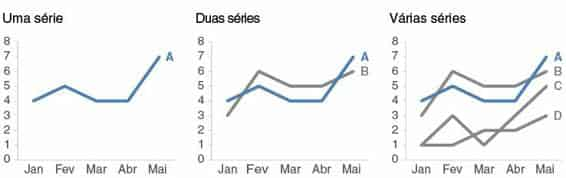
FIGURA 2.8 GRÁFICOS DE LINHA
Note que, quando o tempo está sendo representado no eixo x horizontal de um gráfico de linhas, os dados traçados devem estar em intervalos coerentes.
Vi, recentemente, um gráfico em que as unidades do eixo x eram décadas de 1900 em diante (1910, 1920, 1930 etc.) e, então, trocadas para anuais depois de 2010 (2011, 2012, 2013, 2014). Isso significava que a distância entre os pontos de década e os pontos anuais pareciam iguais. Essa é uma maneira enganosa de mostrar dados. Seja coerente nos pontos de tempo que representar.
Mostrando a média dentro de um intervalo em um gráfico de linhas
Em alguns casos, a linha do gráfico de linhas pode representar um resumo estatístico, como a média, ou o ponto estimado de uma previsão. Se você também quer dar uma ideia do intervalo (ou do nível de confiança, dependendo da situação), pode fazer isso diretamente no gráfico, visualizando também esse intervalo. Por exemplo, o gráfico da Figura 2.9 mostra os tempos de espera mínimo, médio e máximo no controle de passaportes de um aeroporto em um período de 13 meses.
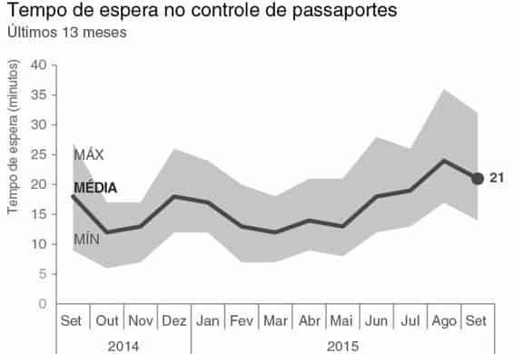
FIGURA 2.9 MOSTRANDO A MÉDIA DENTRO DE UM INTERVALO EM UM GRÁFICO DE LINHAS
Gráfico de inclinação
Os gráficos de inclinação são úteis quando você tem dois períodos de tempo ou pontos de comparação e quer mostrar rapidamente os aumentos ou diminuições relativas ou as diferenças de várias categorias entre os dois pontos de dados.
A melhor maneira de explicar o valor e o caso de uso dos gráficos de inclinação é por meio de um exemplo. Imagine que você está analisando e comunicando dados de uma recente pesquisa de opinião de funcionários. Para mostrar a mudança relativa nas categorias da pesquisa de 2014 a 2015, o gráfico de inclinação poderia ser como o da Figura 2.10.
Os gráficos de inclinação contêm muitas informações. Além dos valores absolutos (os pontos), as linhas que os conectam fornecem o aumento ou decréscimo visual na taxa de mudança (por meio da inclinação ou direção), sem a necessidade de explicar que é isso que estão fazendo ou exatamente qual é a “taxa de mudança” — isso é intuitivo.
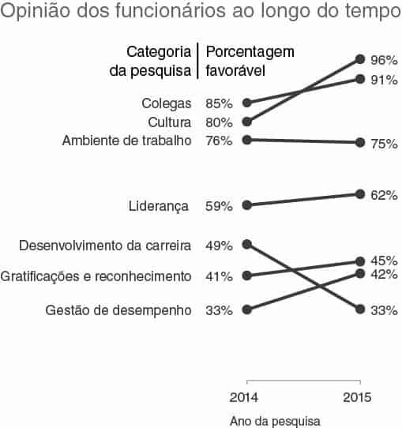
FIGURA 2.10 GRÁFICO DE INCLINAÇÃO
Modelo de gráfico de inclinação
Os gráficos de inclinação podem exigir um pouco de paciência em sua execução, pois muitas vezes não são um dos gráficos padrão incluídos nos aplicativos de geração de gráficos. Um modelo do Excel com um exemplo de gráfico de inclinação e instruções para uso personalizado pode ser baixado aqui (conteúdo em inglês): storytellingwithdata.com/slopegraph-template.
Se um gráfico de inclinação vai funcionar em sua situação específica, depende dos dados em si. Se muitas linhas estão se sobrepondo, o gráfico pode não funcionar, embora, em alguns casos, você ainda possa enfatizar uma série por vez com sucesso. Por exemplo, podemos chamar a atenção para a categoria do exemplo anterior que diminuiu ao longo do tempo.
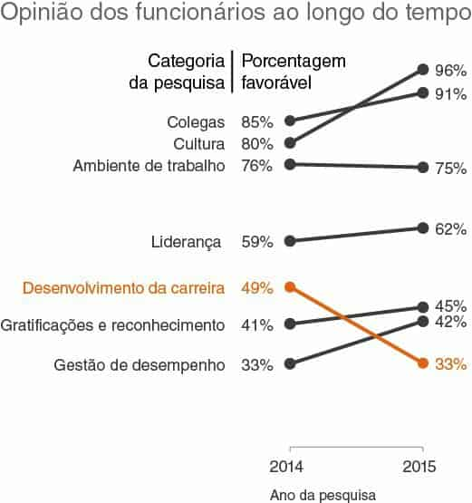
FIGURA 2.11 GRÁFICO DE INCLINAÇÃO MODIFICADO
Na Figura 2.11, nossa atenção se volta imediatamente para a diminuição no “Desenvolvimento da carreira”, enquanto o restante dos dados é preservado para contextualizar, sem disputar a atenção. Vamos falar sobre a estratégia por trás disso ao discutirmos os atributos pré-atentivos, no Capítulo 4.
Enquanto as linhas funcionam bem para mostrar dados através do tempo, as barras tendem a ser meu gráfico preferido para representar dados categóricos, nos quais a informação é organizada em grupos.
Às vezes os gráficos de barras são evitados por serem comuns. Isso é um erro. Os gráficos de barras devem ser aproveitados porque são comuns, pois isso significa menos curva de aprendizado para seu público. Em vez de usar o poder do cérebro para tentar ler o gráfico, seu público o utiliza para decidir qual informação extrair da apresentação.
Nossos olhos leem gráficos de barras facilmente. Eles comparam os pontos extremos das barras, de modo que é fácil ver rapidamente qual é a categoria maior, qual é a menor e a diferença incremental entre as categorias. Note que, devido ao modo como nossos olhos comparam os pontos extremos relativos das barras, é importante que os gráficos de barras sempre tenham uma linha de base zero (em que o eixo x cruza o eixo y em zero); caso contrário, você obterá uma comparação visual falsa.
Considere a Figura 2.12, da Fox News.
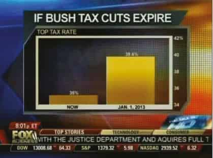
FIGURA 2.12 GRÁFICO DE BARRAS DA FOX NEWS
Para este exemplo, vamos imaginar que estamos no outono de 2012. Nos perguntamos o que acontecerá se os cortes de impostos de Bush expirarem.
No lado esquerdo, temos que atualmente a alíquota é de 35% e no lado direito qual será em 1º de janeiro, 39,6%.
Quando você olha esse gráfico, como ele faz você se sentir em relação à possível expiração dos cortes de impostos? Talvez preocupado com o enorme aumento? Vamos ver mais de perto.
Note que o número inferior no eixo vertical (mostrado na extremidade direita) não é zero, mas 34. Isso significa que as barras, teoricamente, devem continuar para baixo até a parte inferior da página. De fato, do modo como isso está representado, o aumento visual é de 460% (as alturas das barras são 35 – 34 = 1 e 39,6 – 34 = 5,6; assim, (5,6 – 1) / 1 = 460%). Se mostrarmos as barras com uma linha de base zero, de modo que as alturas sejam representadas (35 e 39,6), obteremos um aumento visual real de 13% (39,6 – 35) / 35). Vamos ver em uma comparação lado a lado, na Figura 2.13.
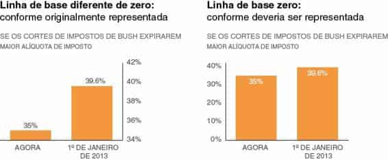
FIGURA 2.13 OS GRÁFICOS DE BARRA DEVEM TER UMA LINHA DE BASE ZERO
Na Figura 2.13, o que vimos como um enorme aumento à esquerda é consideravelmente reduzido quando representado adequadamente. Talvez o aumento do imposto não seja tão preocupante ou pelo menos não tão sério quanto originalmente representado. Devido ao modo como nossos olhos comparam os pontos extremos relativos das barras, é importante ter o contexto da barra inteira para se fazer uma comparação precisa.
Você notará que foram feitas duas outras alterações no design na reconstrução dessa apresentação. As legendas do eixo y, que estavam colocadas no lado direito do gráfico original, foram movidas para a esquerda (para vermos como interpretar os dados antes de chegarmos aos dados reais).
As legendas de dados que estavam originalmente fora das barras foram colocadas dentro para reduzir a saturação. Se eu fosse representar esses dados fora desta lição específica, poderia omitir o eixo y inteiramente e mostrar apenas as legendas de dados dentro das barras para reduzir a informação redundante. Contudo, neste caso, preservei o eixo para deixar claro que ele começa em zero.
Ao se representar dados em gráficos, uma decisão comum a tomar é se as legendas de eixo serão preservadas ou se os eixos serão eliminados e os pontos de dados legendados diretamente. Ao tomar essa decisão, considere o grau de especificidade necessário. Se quiser que seu público se concentre nas tendências gerais, preserve o eixo, mas retire sua ênfase, tornando-o cinza. Se os valores numéricos específicos forem importantes, talvez seja melhor legendar os pontos de dados. Neste caso, normalmente é melhor omitir o eixo para evitar a inclusão de informação redundante. Sempre considere como você quer que seu público use o visual e construa-o de forma correspondente.
A regra que ilustramos aqui é que os gráficos de barras devem ter uma linha de base zero. Note que essa regra não se aplica aos gráficos de linhas. Neles, como o enfoque é a posição relativa no espaço (em vez do comprimento da linha de base ou do eixo), você pode usar uma linha de base diferente de zero.
Mas deve ter cuidado — deixe claro ao seu público que você está usando uma linha de base diferente de zero e leve em conta o contexto para não exagerar e fazer com que pequenas mudanças ou diferenças pareçam significativas.
E se mudar a escala em um gráfico de barras ou manipular os dados reforçar a ideia que você quer passar? Não é correto enganar dessa maneira, visualizando dados de modo inexato. Além das preocupações com a ética, esse é um território arriscado.
Basta um público perspicaz notar o problema (por exemplo, o eixo y de um gráfico de barras começando em algo diferente de zero) e todo seu argumento será jogado pela janela, junto com sua credibilidade.
Enquanto estamos considerando comprimentos de barras, vamos examinar a largura. Não há uma regra obrigatória aqui, mas, em geral, as barras devem ser mais largas que o espaço em branco entre elas. Contudo, você não quer que as barras sejam tão largas a ponto de seu público querer comparar áreas, em vez de comprimentos. Considere os seguintes “cachinhos dourados” dos gráficos de barra: finas demais, grossas demais e corretas.
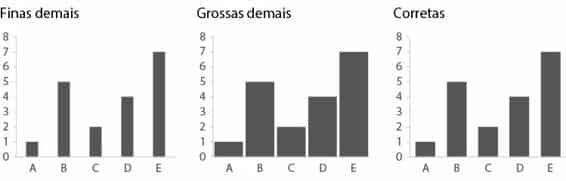
FIGURA 2.14 LARGURA DE BARRA
Discutimos algumas das melhores práticas quando se trata de gráficos de barras em geral. A seguir, vamos ver algumas variações. Ter diversos gráficos de barras à disposição proporciona a você flexibilidade ao se deparar com diferentes desafios de visualização de dados. Vamos ver os que considero que você deve conhecer.
O gráfico de barras básico é o de barras verticais, ou gráfico de colunas.
Como os gráficos de linhas, os gráficos de barras verticais podem ter uma, duas ou várias séries. Note que, à medida que séries de dados são adicionadas, torna-se mais difícil enfocar uma por vez e entender; portanto, use gráficos de barras com várias séries com cuidado. Saiba também que ocorre um agrupamento visual como resultado do espaçamento em gráficos de barras com mais de uma série de dados. Isso torna a ordem relativa da categorização importante. Considere que você quer que seu público possa fazer comparações, e estruture sua hierarquia de categorização de forma a tornar isso o mais fácil possível.
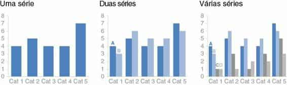
FIGURA 2.15 GRÁFICOS DE BARRAS
Os casos de uso para gráficos de barras verticais empilhadas são mais limitados. Eles se destinam a permitir a comparação de totais entre categorias e ainda para visualizar as partes subcomponentes dentro de determinada categoria. No entanto, isso pode se tornar confuso rapidamente — especialmente dada a variedade de esquemas de cores padrão na maioria dos aplicativos de geração de gráficos (mais informações sobre isso adiante). É difícil comparar os subcomponentes dentre as várias categorias, uma vez que você ultrapasse a série inferior (aquela imediatamente ao lado do eixo x), pois não há mais uma linha de base coerente para usar na comparação. Isso dificulta a comparação para nossos olhos, como ilustrado na Figura 2.16.
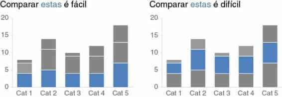
FIGURA 2.16 COMPARANDO SÉRIES COM GRÁFICOS DE BARRAS EMPILHADAS
O gráfico de barras verticais empilhadas pode ser estruturado como números absolutos (em que você representa os números diretamente, como mostrado na Figura 2.16) ou com cada coluna somando 100% (em que você representa a porcentagem do total de cada segmento vertical; vamos ver um exemplo específico disso no Capítulo 9). Qual você escolhe depende do que está tentando comunicar para seu público. Quando você usar a barra empilhada em 100%, pense se faz sentido incluir também os números absolutos para cada total de categoria (de modo discreto, diretamente no gráfico, ou possivelmente em uma nota de rodapé), os quais podem ajudar na interpretação dos dados.
O gráfico de cascata pode ser usado para separar as partes de um gráfico de barras empilhadas a fim de se focalizar uma por vez ou para mostrar um ponto de partida, aumentos ou reduções e o ponto final resultante.
A melhor maneira de ilustrar o caso de uso para um gráfico de cascata é por meio de um exemplo. Imagine que você é um parceiro comercial de RH e quer entender e comunicar ao seu cliente como o número de funcionários mudou no último ano.
Um gráfico de cascata mostrando essa decomposição poderia ser como o da Figura 2.17.
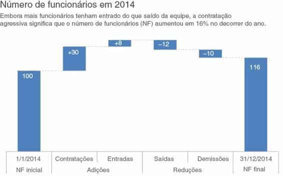
FIGURA 2.17 GRÁFICO DE CASCATA
No lado esquerdo, vemos o número de funcionários na equipe no início do ano. Ao nos movermos para a direita, primeiro encontramos as adições incrementais: novas contratações e funcionários de outras partes da empresa entrando na equipe. A isso seguem-se as reduções: saídas da equipe para outras partes da empresa e perda de pessoal. A última coluna representa o número de funcionários no final do ano, após as adições e reduções serem aplicadas ao início da contagem no ano.
Se seu aplicativo de geração de gráficos não tem funcionalidade para gráficos de cascata, não se preocupe. O segredo é aproveitar o gráfico de barras empilhadas e tornar a primeira série (a que aparece mais perto do eixo x) invisível. Isso exige um pouco de matemática para definir corretamente, mas funciona. Uma postagem (em inglês) no blog sobre este assunto, junto com um exemplo de versão no Excel do gráfico anterior e instruções sobre como definir um para seus propósitos, pode ser baixada no site..
Se eu tivesse que escolher um único gráfico para dados categóricos, seria o de barras horizontais, que vira de lado a versão vertical. Por quê? Porque ele é extremamente fácil de ler. O gráfico de barras horizontais é particularmente útil se seus nomes de categoria são longos, pois o texto é escrito da esquerda para a direita, conforme a maioria lê, facilitando a leitura do gráfico para seu público. Além disso, graças ao modo como normalmente processamos informações — começando à esquerda e em cima, e fazendo Zs com nossos olhos na tela ou página —, a estrutura do gráfico de barras horizontais é tal que nossos olhos atingem os nomes de categoria antes dos dados. Isso significa que, ao chegarmos aos dados, já sabemos o que eles representam (em vez dos movimentos rápidos, para frente e para trás, que nossos olhos fazem entre os dados e os nomes de categoria nos gráficos de barras verticais).
Assim como o gráfico de barras verticais, o gráfico de barras horizontais pode ter uma, duas ou várias séries (Figura 2.18).
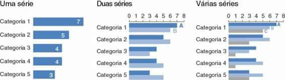
FIGURA 2.18 GRÁFICOS DE BARRAS HORIZONTAIS
Ao projetar qualquer gráfico que mostre dados categóricos, reflita sobre como as categorias são ordenadas. Se houver uma ordem natural, pode fazer sentido aproveitá-la. Por exemplo, se suas categorias são grupos etários — 0 a 10 anos, 11 a 20 anos e assim por diante —, mantenha as categorias em ordem numérica. No entanto, se não houver nas categorias uma ordem natural que faça sentido aproveitar, considere qual ordenação de seus dados fará mais sentido. Ser cuidadoso aqui pode significar transmitir um conceito para seu público, facilitando o processo de interpretação.
Seu público (sem outras dicas visuais) normalmente verá sua apresentação a partir da parte superior esquerda de seu gráfico, ziguezagueando em forma de “z”. Isso significa que encontrará primeiro a parte superior do gráfico. Se a maior categoria é a mais importante, coloque essa primeiro e organize as restantes em ordem numérica decrescente. Ou, se a menor é a mais importante, coloque essa na parte superior e organize pelos valores de dados em ordem crescente.
Para um exemplo específico sobre a ordenação lógica de dados, veja o estudo de caso 3 no Capítulo 9.
Semelhantes ao gráfico de barras verticais empilhadas, os gráficos de barras horizontais empilhadas podem ser usados para mostrar os totais em diferentes categorias, mas também dar uma ideia das partes subcomponentes. Eles podem ser estruturados de forma a mostrar valores absolutos ou a soma até 100%.
Eu acho que esta última estratégia pode funcionar bem para visualizar partes de um todo em uma escala do negativo para o positivo, pois você obtém uma linha de base coerente nas extremidades esquerda e direita, permitindo uma fácil comparação das partes mais à esquerda e mais à direita. Por exemplo, essa estratégia pode funcionar bem para visualizar dados de pesquisa coletados ao longo de uma escala Likert (uma escala comumente usada em pesquisas, que normalmente varia de Discordo Totalmente a Concordo Totalmente), como mostrado na Figura 2.19.
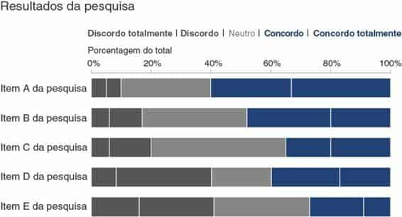
FIGURA 2.19 GRÁFICO DE BARRAS HORIZONTAIS EMPILHADAS A 100%
Eu evito a maioria dos gráficos de área. Os olhos humanos não conseguem atribuir bem o valor quantitativo no espaço bidimensional, o que pode dificultar a leitura dos gráficos de área se comparado com alguns dos outros tipos de apresentações visuais que discutimos. Por isso, eu normalmente os evito, com uma exceção — quando preciso visualizar números de magnitudes amplamente diferentes. A segunda dimensão que se obtém usando um quadrado (que tem altura e largura, comparado com uma barra que tem apenas altura ou largura) permite que isso seja feito de um modo mais compacto do que é possível com apenas uma dimensão, como mostrado na Figura 2.20.
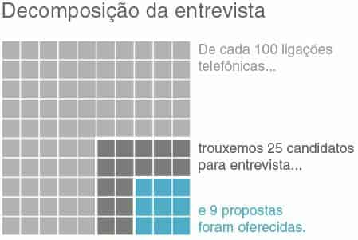
FIGURA 2.20 GRÁFICO DE ÁREA QUADRADA
O que abordei até este ponto foram os tipos de gráficos que uso normalmente.
Certamente essa não é uma lista exaustiva. Contudo, eles devem atender à maioria de suas necessidades diárias. Dominar o básico é imperativo antes de se explorar novos tipos de visualização de dados.
Existem muitos outros tipos de gráficos. Quando se trata de selecionar um gráfico, acima de tudo, escolha um tipo que permita comunicar claramente sua mensagem ao seu público. Com tipos menos conhecidos de visuais, você provavelmente precisará tomar mais cuidado em torná-los acessíveis e compreensíveis.
Infográfico é um termo muitas vezes mal usado. Infográfico é simplesmente uma representação gráfica de informações ou dados. Os infográficos podem variar de fofinhos a informativos. No lado inadequado do espectro, frequentemente eles contêm elementos extravagantes, números superdimensionados e imagens caricaturais. Esses designs têm certo apelo visual e podem seduzir o leitor. Contudo, na segunda olhada, eles parecem superficiais e deixam um público perspicaz insatisfeito. Aqui, a descrição de “gráfico informativo” — embora muito usada — não é apropriada. No outro lado do espectro estão os infográficos que correspondem aos seus nomes e realmente informam. Existem exemplos muito bons na área do jornalismo de dados (por exemplo, o New York Times e a National Geographic).
Existem perguntas importantes que os designers de informação precisam responder antes de iniciar o processo de design. São as mesmas perguntas que discutimos para entender o contexto do storytelling com dados. Quem é seu público? O que você precisa que ele saiba ou faça? Somente depois que as respostas a essas perguntas possam ser articuladas sucintamente é que poderá ser escolhido um método eficaz de apresentação que auxilie a mensagem. Uma boa visualização de dados — seja um infográfico ou outro tipo — não é simplesmente uma coleção de fatos sobre determinado assunto; a boa visualização de dados conta uma história.
Discutimos os visuais que mais uso para comunicar dados em um ambiente comercial. Existem ainda alguns tipos e elementos de gráfico específicos que devem ser evitados: gráficos de pizza, gráficos de rosca, 3D e eixos y secundários. Vamos discuti-los.
Tenho desprezo bem documentado a gráficos de pizza. Resumindo, eles são ruins. Para entender como cheguei a essa conclusão, vamos ver um exemplo.
O gráfico de pizza da Figura 2.21 (baseado em um exemplo real) mostra a participação no mercado de quatro fornecedores: A, B, C e D. Se eu pedisse para você fazer uma observação simples — qual é o maior fornecedor, de acordo com este visual —, o que diria?
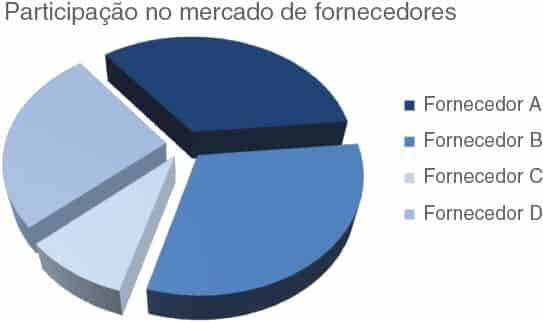
FIGURA 2.21 GRÁFICO DE PIZZA
A maioria das pessoas concordará que o “Fornecedor B,” representado em azul médio na parte inferior direita, parece ser o maior. Se você precisasse avaliar a proporção que o Fornecedor B ocupa no mercado global, que porcentagem poderia estimar?
35%?
40%?
A partir de meu questionamento anterior, talvez você possa dizer que está acontecendo algo suspeito aqui. Dê uma olhada no que acontece quando acrescentamos os números às fatias da pizza, como mostrado na Figura 2.22.
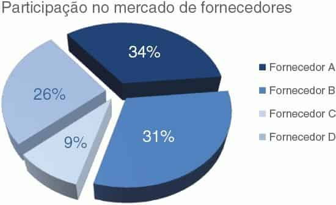
FIGURA 2.22 GRÁFICO DE PIZZA COM SEGMENTOS LEGENDADOS
Na verdade, o “Fornecedor B” — que parece maior, com 31% — é menor que o “Fornecedor A” acima dele, que parece menor.
Vamos discutir dois problemas que apresentam um desafio para a interpretação correta desses dados. A primeira coisa que chama sua atenção (e causa suspeita, se você for um leitor de gráficos perspicaz) é a estranha perspectiva em 3D aplicada ao gráfico, inclinando a fatia e fazendo as partes superiores parecerem mais afastadas e, portanto, menores do que realmente são, enquanto as partes inferiores parecem mais perto e, assim, maiores do que são. Vamos falar mais sobre 3D em breve, mas por enquanto vou enunciar uma regra relevante sobre visualização de dados: não use 3D! Não serve para nada e pode prejudicar muito, como vemos aqui, pois distorce a percepção visual dos números.
Mesmo quando eliminamos o 3D e achatamos a pizza, os desafios à interpretação permanecem. O olho humano não consegue atribuir corretamente valores quantitativos no espaço bidimensional. Dito mais simplesmente: é difícil ler os gráficos de pizza. Quando os segmentos têm tamanhos parecidos, é difícil (se não impossível) dizer qual é o maior.
Quando seus tamanhos não são parecidos, o melhor que você pode fazer é determinar que um é maior que outro, mas não pode avaliar o quanto. Para resolver isso, você pode adicionar legendas, como foi feito aqui. Mas eu ainda diria que o visual não vale o espaço que ocupa.
Em vez disso, o que você deve fazer? Um jeito é substituir o gráfico de pizza por um de barras horizontais, como ilustrado na Figura 2.23, organizado do maior para o menor ou vice-versa (a não ser que haja alguma ordem natural nas categorias que faça sentido aproveitar, como já mencionado). Lembre-se: com gráficos de barras, nossos olhos comparam os pontos extremos. Como as barras são alinhadas em uma linha de base comum, é fácil avaliar o tamanho relativo. Isso facilita ver não apenas qual segmento é o maior, por exemplo, mas também o quanto, incrementalmente, é maior que os outros segmentos.
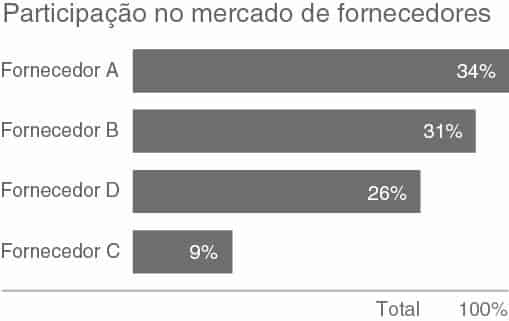
FIGURA 2.23 UMA ALTERNATIVA AO GRÁFICO DE PIZZA
Alguém poderia dizer que você perde algo na transição da pizza para as barras. O único detalhe que você obtém com um gráfico de pizza é o conceito de haver um todo e, assim, partes de um todo. Mas, se o visual é difícil de ler, vale a pena? Na Figura 2.23, tentei tratar disso, mostrando que as partes somam 100%. Não é uma solução perfeita, mas algo a considerar. Para ver mais alternativas aos gráficos de pizza, consulte o estudo de caso 5 no Capítulo 9.
Se você for usar um gráfico de pizza, pare e pergunte-se: por quê? Se puder responder a essa pergunta, você provavelmente refletiu o suficiente para usá-lo, mas certamente esse não deve ser o primeiro tipo de gráfico a ser empregado, dadas algumas das dificuldades na interpretação visual discutidas aqui.
Enquanto estamos no assunto dos gráficos de pizza, vamos ver rapidamente outra “iguaria visual” a evitar: o gráfico de rosca.
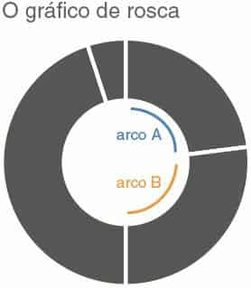
FIGURA 2.24 GRÁFICO DE ROSCA
Com pizzas, estamos pedindo ao nosso público para comparar ângulos e áreas. Com um gráfico de rosca, estamos pedindo para comparar o comprimento de um arco com o comprimento de outro (por exemplo, na Figura 2.24, o comprimento do arco A comparado ao arco B). Quão confiante você se sente na capacidade de seus olhos de atribuir valores quantitativos a um comprimento de arco?
Não muito? Foi o que pensei. Não use gráficos de rosca.
Uma das regras de ouro da visualização de dados é esta: nunca use 3D.
Repita comigo: nunca use 3D. A única exceção é se você estiver representando uma terceira dimensão (e, mesmo assim, as coisas ficam complicadas rapidamente; portanto, cuidado ao fazer isso) — e você nunca deve usar 3D para representar uma única dimensão. Como vimos no exemplo de gráfico de pizza anterior, 3D distorce nossos números, tornando difícil ou impossível interpretá-los ou compará-los.
Adicionar 3D aos gráficos introduz elementos desnecessários a ele, como painéis laterais e chão. Ainda pior do que essas distrações, os aplicativos de geração de gráficos fazem algumas coisas muito estranhas ao representar valores em 3D. Por exemplo, em um gráfico de barras em 3D, você poderia pensar que seu aplicativo de geração de gráficos representaria a frente da barra ou talvez a parte traseira. Infelizmente, muitas vezes as coisas são mais complicadas. No Excel, por exemplo, a altura da barra é determinada por um plano tangente invisível, cruzando a altura correspondente no eixo y. Isso gera gráficos como o que aparece na Figura 2.25.
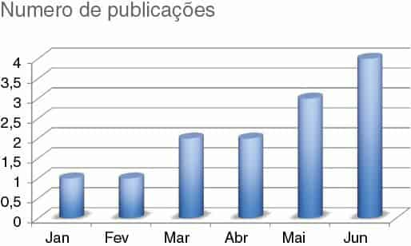
FIGURA 2.25 GRÁFICO DE COLUNAS EM 3D
A julgar pela Figura 2.25, quantas publicações havia em janeiro e fevereiro?
Eu representei uma publicação para cada um desses meses. No entanto, do modo como leio o gráfico, se comparasse a altura da barra com as linhas de grade e seguisse para a esquerda do eixo y, estimaria visualmente um valor de 0,8, talvez. Essa visualização de dados é simplesmente ruim. Não use 3D.
Às vezes é útil representar dados que estão em unidades totalmente diferentes no mesmo eixo x. Frequentemente, isso gera o eixo y secundário: outro eixo vertical no lado direito do gráfico.
Veja o exemplo mostrado na Figura 2.26.
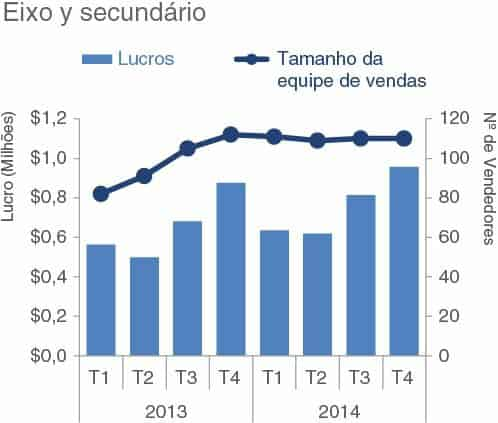
FIGURA 2.26 EIXO Y SECUNDÁRIO
Interpretar a Figura 2.26, requer tempo e leitura para entendermos quais dados devem ser lidos em relação a qual eixo. Por isso, você deve evitar o uso de um eixo y secundário ou à direita. Em vez disso, considere se umas das seguintes estratégias atenderá suas necessidades:
A Figura 2.27 ilustra estas opções.
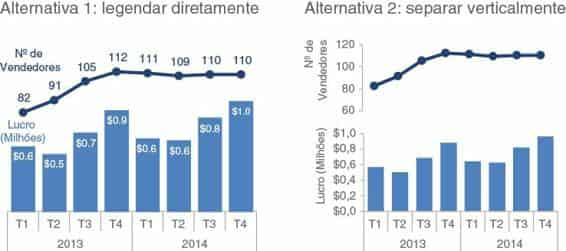
FIGURA 2.27 ESTRATÉGIAS PARA EVITAR UM EIXO Y SECUNDÁRIO
Uma terceira possível opção, não mostrada aqui, é vincular o eixo aos dados a serem lidos usando cores. Por exemplo, no gráfico original apresentado na Figura 2.26, eu poderia escrever o título do eixo y à esquerda, “Lucros”, em azul e manter as barras de lucro azuis, e escrever o título do eixo y à direita, “Nº de Vendedores”, em laranja e tornar o gráfico de linhas laranja para interligá-los visualmente. Não recomendo essa estratégia, porque as cores normalmente podem ser usadas de forma mais estratégica. Vamos passar muito mais tempo discutindo cores no Capítulo 4.
Também vale notar que, quando você representa dois conjuntos de dados no mesmo eixo, isso pode indicar uma relação que talvez exista ou não. Atenção a isso ao determinar se essa é uma estratégia adequada.
Quando você estiver enfrentando o desafio do eixo y secundário e considerando qual alternativa mostrada na Figura 2.27 atenderá melhor suas necessidades, pense no grau de especificidade de que precisa. A alternativa 1, na qual cada ponto de dados é legendado explicitamente, dá mais atenção aos números específicos. A alternativa 2, na qual os eixos são mostrados à esquerda, focaliza mais as tendências dominantes. Em geral, evite o eixo y secundário e, em vez disso, empregue uma dessas estratégias alternativas.
Neste capítulo, exploramos os tipos de representações visuais que mais utilizo. Haverá casos de uso para outros tipos de apresentações, mas os que abordamos aqui devem satisfazer a maioria das necessidades diárias.
Em muitos casos, não há uma única representação visual correta; em vez disso, frequentemente existem diferentes tipos de apresentações que poderiam atender a determinada necessidade. Com base no capítulo anterior sobre contexto, o mais importante é ter essa necessidade claramente enunciada: O que você precisa que seu público saiba? Então, escolha uma representação visual que deixe isso claro.
Caso esteja se perguntando qual é o gráfico correto para minha situação?, a resposta é sempre a mesma: qualquer um que seja mais fácil para seu público ler. Há um modo fácil de testar isso, que é criar seu visual e mostrá-lo para um amigo ou colega. Peça para ele enunciar o seguinte, ao processar a informação: o que enfoca, o que vê, quais observações faz, quais perguntas tem. Isso o ajudará a avaliar se seu visual está atingindo o objetivo ou, se não estiver, ajudará a saber onde concentrar suas alterações.
Agora você sabe a segunda lição do storytelling com dados: como escolher uma representação visual adequada.